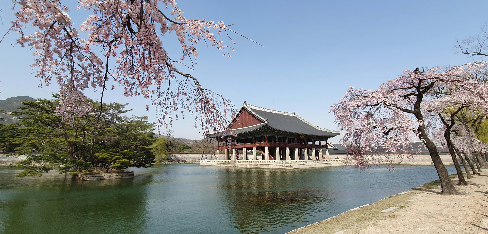

법궁의 위엄, 근정전(勤政殿)

근정전은 경복궁의 정전으로, 왕의 즉위식이나 문무백관의 조례, 외국 사신의 접견 등 국가의 공식 행사가 거행되던 곳입니다. 사진 속 탁 트인 조정과 품계석은 조선 시대의 엄격한 위계와 질서를 잘 보여줍니다. 뒷편으로 보이는 북악산의 기세가 근정전의 웅장함을 더해줍니다.
연회의 장소, 경회루(慶會樓)

봄바람에 흩날리는 벚꽃과 어우러진 경회루는 경복궁에서 가장 아름다운 풍경 중 하나입니다. 단일 평면으로는 우리나라에서 가장 큰 누각으로, 연못 위에 떠 있는 듯한 건축 양식은 자연과 인공의 완벽한 조화를 상징합니다.
궁궐 소식
현재 '경복궁 야간 관람' 예매가 진행 중입니다. 아름다운 밤의 궁궐을 만나보세요.
주요 궁궐
- 창덕궁 (후원)
- 창경궁 (야간개장)
- 덕수궁 (석조전)
- 경희궁
관람 시간
09:00 - 18:00 (화요일 휴궁)